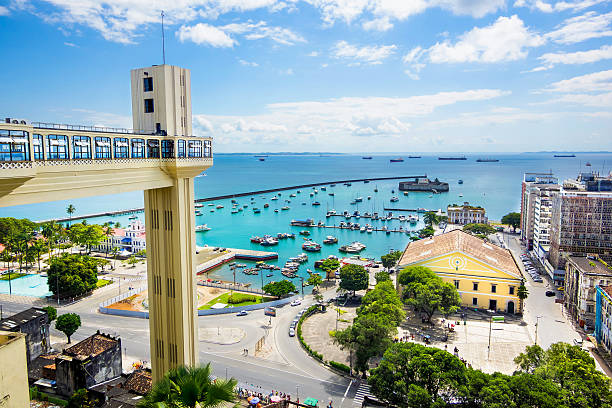

A Bahia é um estado localizado na região Nordeste do Brasil, conhecido por sua rica cultura, história e belezas naturais. Sua capital é Salvador, uma das cidades mais antigas do país e importante centro cultural, famoso pelo seu Carnaval, música (como o samba-reggae e o axé), festas tradicionais e culinária típica. A Bahia possui uma diversidade de paisagens, incluindo praias paradisíacas, recifes, manguezais e áreas de sertão. A economia da região é baseada na agricultura, turismo, petróleo e indústria cultural. A cultura baiana é marcada pela forte influência africana, refletida em suas manifestações artísticas, religiosas e culinárias. A Bahia é considerada um dos principais destinos turísticos do Brasil devido à sua história vibrante e suas belezas naturais.
